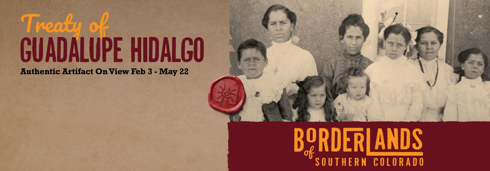
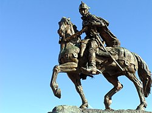
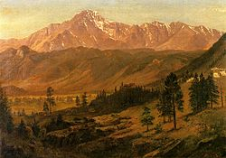

click to go back home
COLORADO HISTORICAL
his article needs additional citations for verification. Please help improve this article by adding citations to reliable sources. Unsourced material may be challenged and removed.
Find sources: "History of Colorado" – news · newspapers · books · scholar · JSTOR (February 2021) (Learn how and when to remove this template message)
The region that is today the U.S. State of Colorado has been inhabited by Native Americans and their Paleoamerican ancestors for at least 13,500 years and possibly more than 37,000 years.[1][2] The eastern edge of the Rocky Mountains was a major migration route that was important to the spread of early peoples throughout the Americas. The Lindenmeier site in Larimer County contains artifacts dating from approximately 8720 BCE.
When explorers, early trappers, hunters, and gold miners visited and settled in Colorado, the state was populated by American Indian nations. Westward expansion brought European settlers to the area and Colorado's recorded history began with treaties and wars with Mexico and American Indian nations to gain territorial lands to support the transcontinental migration. In the early days of the Colorado gold rush, Colorado was a Territory of Kansas and Territory of Jefferson. On August 1, 1876, Colorado was admitted as a state, maintaining its territorial borders.

Historic Native American people
Further information: Indigenous peoples of the North American Southwest and Prehistory of Colorado
Chief Ouray and Chipeta
Ancestral Puebloans — A diverse group of peoples that lived in the valleys and mesas of the Colorado Plateau
Apache Nation — An Athabaskan-speaking nation that lived in the Great Plains in the 18th century, then migrated southward to Texas, New Mexico, and Arizona, leaving a void on the plains that was filled by the Arapaho and Cheyenne from the east.
Arapaho Nation — An Algonquian-speaking nation that migrated westward to the base of the Rocky Mountains in the late 19th century and settled on the piedmont and the eastern plains. They were relocated entirely out of Colorado in 1865 following the Colorado War.
Cheyenne Nation — An Algonquian-speaking nation very closely related to the Arapaho. Like the Arapaho, they migrated westward in the 18th century to the base of the Rockies. They often lived in bands interspersed among the Arapaho, and were also relocated out of Colorado in the 1860s.
Comanche Nation — A Numic-speaking nation that lived on the High Plains of southeastern Colorado. Closely related to the Shoshone, they acquired the horse from the Spaniards and roamed the southern Great Plains. The Comanche were removed to Indian territory.
Shoshone Nation — A Numic-speaking nation that inhabited intermountain valleys along the north edge of the state, especially in the Yampa River valley, up through the late 19th century. Areas included North Park and Browns Park.
Ute Nation — A Numic-speaking nation that has lived in the Southern and the Western Rocky Mountains for many centuries. Their leaders were Chief Ouray and his wife Chipeta. They often clashed with the Arapaho and Cheyenne, and resisted the encroachment of these nations into the mountains. Until the 1880s, the Ute controlled nearly all of Colorado west of the continental divide, a situation that eroded after the silver boom of 1879. After clashing with white settlers in the 1880s in the Meeker Massacre, they were nearly entirely relocated out of the state into Utah, except for two small reservations in southwestern Colorado.
European settlement

The first Europeans to visit the region were Spanish conquistadors. Juan de Oñate who lived until 1626, founded what would become the Spanish province of Santa Fé de Nuevo México among the pueblos of the Rio Grande on July 11, 1598. In 1787 Juan Bautista de Anza established the settlement of San Carlos near present-day Pueblo, Colorado, but it quickly failed.[3] This was the only Spanish attempt to create a settlement north of the Arkansas River. Colorado became part of the Spanish province of Santa Fe de Nuevo México as part of the Viceroyalty of New Spain.[4] The Spaniards traded with Native Americans who lived there and established the Comercio Comanchero (Comanche Trade) among the Spanish settlements and the Native Americans.[5]
In 1803 the United States acquired a territorial claim to the eastern flank of the Rocky Mountains by the Louisiana Purchase from France. However, the claim conflicted with Spain's claim to sovereignty over the territory. Zebulon Pike led a U.S. Army reconnaissance expedition into the disputed region in 1806. Pike and his troops were arrested by Spanish cavalry in the San Luis Valley, taken to Chihuahua, then expelled from México.
Miguel Hidalgo y Costilla declared Mexico's independence from Spain on September 16, 1810. In 1819, the United States ceded its claim to the land south and west of the Arkansas River to Spain with the Adams-Onís Treaty, at the same time purchasing Florida. Mexico finally won its independence with the Treaty of Córdoba signed on August 24, 1821, and assumed the territorial claims of Spain. Although Mexican traders ventured north, settlers stayed south of the 37th parallel north until the United States signed a peace treaty with the Ute Nation in 1850.
Trading posts such as Bent's Old Fort served fur traders in the early 19th century.
During the period 1832 to 1856, traders, trappers, and settlers established trading posts and small settlements along the Arkansas River, and on the South Platte near the Front Range. Prominent among these were Bent's Fort and Fort Pueblo on the Arkansas and Fort Saint Vrain on the South Platte. The main item of trade offered by the Indians was buffalo robes,[6] see Early history of the Arkansas Valley in Colorado and Forts in Colorado.
In 1846 the United States went to war with Mexico. Mexico's defeat forced the nation to relinquish its northern territories by the Treaty of Guadalupe Hidalgo in 1848. This opened the Southern Rocky Mountains to American settlement, including what is now the lower portion of Colorado. The newly gained land was divided into the Territory of New Mexico and the Territory of Utah, both organized in 1850, and the Territory of Kansas and the Territory of Nebraska, organized in 1854. Most settlers avoided the rugged Rocky Mountains and headed for Oregon, the Deseret, or California, usually following the North Platte River and the Sweetwater River to South Pass in what is now Wyoming.
On April 9, 1851, Hispanic settlers from Taos, New Mexico, settled the village of San Luis, then in the New Mexico Territory, but now Colorado's first permanent European settlement.
Pike's Peak Gold Rush

On June 22, 1850, a wagon train bound for California crossed the South Platte River just north of the confluence with Clear Creek, and followed Clear Creek west for six miles. Lewis Ralston dipped his gold pan in a stream flowing into Clear Creek, and found almost $5 in gold (about a quarter of a troy ounce) in his first pan. John Lowery Brown, who kept a diary of the party's journey from Georgia to California, wrote on that day: "Lay bye. Gold found." In a notation above the entry, he wrote, "We called this Ralston's Creek because a man of that name found gold here.”
Ralston continued on to California, but returned to 'Ralston's Creek' with the Green Russell party eight years later. Members of this party founded Auraria (later absorbed into Denver City) in 1858 and touched off the gold rush to the Rockies. The confluence of Clear Creek and Ralston Creek, the site of Colorado's first gold discovery is now in Arvada, Colorado.
In 1858, several parties of gold seekers bound for the California Gold Rush panned small amounts of gold from various streams in the South Platte River Valley at the foot of the Rocky Mountains in then western Kansas Territory, now northeast Colorado. The gold nuggets initially failed to impress the gold seekers, but rumors of gold in the Rocky Mountains persisted, and several small parties explored the region. In the summer of 1857, a party of Spanish-speaking gold seekers from the New Mexico Territory worked a placer deposit along the South Platte River about 5 miles (8 km) above Cherry Creek (in what is today the Overland Park neighborhood of Denver.)[7]
The following year, William Greeneberry "Green" Russell led a party of Cherokee gold seekers from the State of Georgia to search for gold along the South Platte River. In the first week of July 1857, Green Russell and Sam Bates found a small placer deposit near the mouth of Little Dry Creek (in present-day Englewood) that yielded about 20 troy ounces (622 grams) of gold, the first significant gold discovery in the Rocky Mountain region.
News of this discovery soon spread and precipitated the Pike's Peak Gold Rush.[8] An estimated 100,000 gold seekers flocked to the region over the next three years. The placer gold deposits along the rivers and streams of the region rapidly played out, but miners soon discovered far more valuable seams of hard rock gold, silver, and other minerals in the nearby mountains. This gold rush helped to attract people to the state and resulted in a population boom.